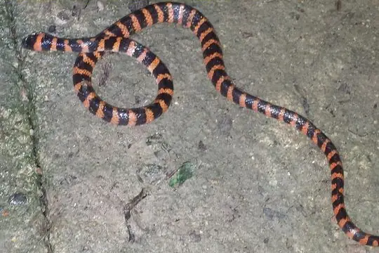
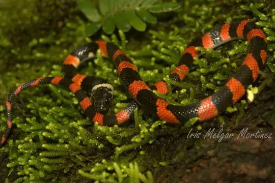
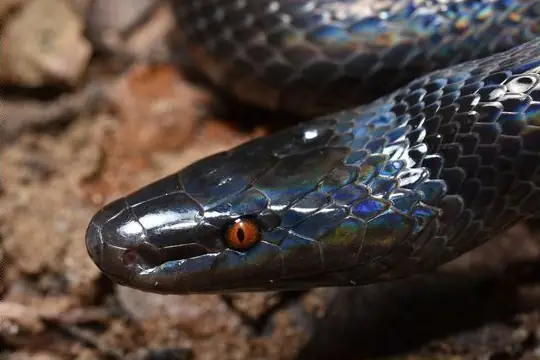

Oxyrhopus
The genus Oxyrhopus (family Colubridae) has 15 living species in SnakeList (none venomous), recorded in 15 countries (+1 territory).
- 15living species
- 15non-venomous
- 15countries
About the genus
A genus of the family Colubridae (colubrids).
Species
Showing 15 species
 Amazon False Coral SnakeOxyrhopus rhombifer
Amazon False Coral SnakeOxyrhopus rhombifer Beautiful Calico SnakeOxyrhopus formosus
Beautiful Calico SnakeOxyrhopus formosus Bibron's False Coral SnakeOxyrhopus doliatus
Bibron's False Coral SnakeOxyrhopus doliatus Boulenger's False Coral SnakeOxyrhopus marcapatae
Boulenger's False Coral SnakeOxyrhopus marcapatae Brazilian False Coral SnakeOxyrhopus trigeminus
Brazilian False Coral SnakeOxyrhopus trigeminus
Duméril's False Coral SnakeOxyrhopus clathratus Erdis' False Coral SnakeOxyrhopus erdisii
Erdis' False Coral SnakeOxyrhopus erdisii Fitzinger's False Coral SnakeOxyrhopus fitzingeri
Fitzinger's False Coral SnakeOxyrhopus fitzingeri
Forest Flame SnakeOxyrhopus petolarius Guibe's Flame SnakeOxyrhopus guibei
Guibe's Flame SnakeOxyrhopus guibei Impostor Flame-SnakeOxyrhopus vanidicus
Impostor Flame-SnakeOxyrhopus vanidicus Northern Calico SnakeOxyrhopus occipitalis
Northern Calico SnakeOxyrhopus occipitalis Tschudi's False Coral SnakeOxyrhopus melanogenys
Tschudi's False Coral SnakeOxyrhopus melanogenys Werner's False Coral SnakeOxyrhopus leucomelas
Werner's False Coral SnakeOxyrhopus leucomelas
Oxyrhopus emberti
No snakes in Oxyrhopus match.
About the genus Oxyrhopus
- Distribution: living species recorded in 15 countries (+1 territory), on 2 continents: North America, South America.
- Family: Colubridae.
- Countries and territories: Argentina, Bolivia, Brazil, Colombia, Ecuador, El Salvador, French Guiana, Guatemala, Guyana, Mexico, Panama, Paraguay, Peru, Suriname, Uruguay, Venezuela.
Compare its species
Its living species side by side. Lengths come only from SnakeList’s reviewed, sourced accounts; the others are left blank rather than guessed.
| Species | Venom | Recorded in | Adult length (reviewed accounts) |
|---|---|---|---|
| Amazon False Coral Snake Oxyrhopus rhombifer | Non-venomous | 6 countries (South America) | No reviewed account yet |
| Beautiful Calico Snake Oxyrhopus formosus | Non-venomous | 3 countries (South America) | No reviewed account yet |
| Bibron's False Coral Snake Oxyrhopus doliatus | Non-venomous | 2 countries (South America) | No reviewed account yet |
| Boulenger's False Coral Snake Oxyrhopus marcapatae | Non-venomous | 1 country (South America) | No reviewed account yet |
| Brazilian False Coral Snake Oxyrhopus trigeminus | Non-venomous | 5 countries (South America) | No reviewed account yet |
| Duméril's False Coral Snake Oxyrhopus clathratus | Non-venomous | 2 countries (South America) | No reviewed account yet |
| Erdis' False Coral Snake Oxyrhopus erdisii | Non-venomous | 1 country (South America) | No reviewed account yet |
| Fitzinger's False Coral Snake Oxyrhopus fitzingeri | Non-venomous | 2 countries (South America) | No reviewed account yet |
| Forest Flame Snake Oxyrhopus petolarius | Non-venomous | 3 countries (North America) | No reviewed account yet |
| Guibe's Flame Snake Oxyrhopus guibei | Non-venomous | 5 countries (South America) | No reviewed account yet |
| Impostor Flame-Snake Oxyrhopus vanidicus | Non-venomous | 5 countries (South America) | No reviewed account yet |
| Northern Calico Snake Oxyrhopus occipitalis | Non-venomous | 8 countries (+1 territory) (North America, South America) | No reviewed account yet |
| Tschudi's False Coral Snake Oxyrhopus melanogenys | Non-venomous | 7 countries (+1 territory) (South America) | No reviewed account yet |
| Werner's False Coral Snake Oxyrhopus leucomelas | Non-venomous | 4 countries (South America) | No reviewed account yet |
| Oxyrhopus emberti | Non-venomous | 1 country (South America) | No reviewed account yet |